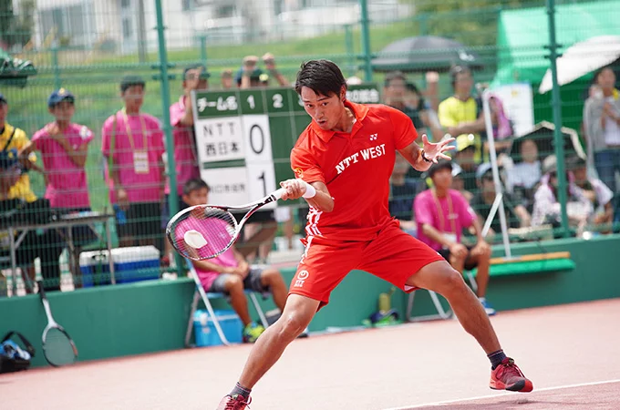

私の好きなスポーツはソフトテニスです。みなさんがよく知ってるのは硬式だと思いますが、今回はソフトテニスです。
私は、中学生・高校生の計6年間部活動をしていました。中学生のころでは基礎を学びました。高校生では技術面を学び、九州大会まで出場することができました。現在は週1のペースで運動がてらテニスをしています。ソフトテニスは硬式と違ってボールがゴムでできていて、ボールに回転をかけると軌道が変わり、取りづらく、打った時の初速などが早いので少し難しい競技です。硬式と違いシングルスがあまりない競技です。後衛と前衛に分かれていてそれぞれの役割が難しいです。後衛はストローク力があり、ラリーをつなげる力が必要となり、前衛は反射神経や瞬発力が重要となってきます。誰でも楽しくできるのでぜひしてみてください！！